apple · 苹果618×618 · 9.7 KiB · RGBA 1492 KiB
apple · 苹果618×618 · 9.7 KiB · RGBA 1492 KiBassets/images/apple.png制作 #84 · 战斗 assets/images/fortress/zombie-body-apple.png + shared legs + learning badge当前资源目录直接引用；这是素材目录，不是实机截图或新样张。图片统一置于160×160 CSS像素框，仅便于风格对比，不代表游戏实际尺寸。RGBA为宽×高×4估算，未含纹理副本和画布。
apple · 苹果618×618 · 9.7 KiB · RGBA 1492 KiBassets/images/apple.png制作 #84 · 战斗 assets/images/fortress/zombie-body-apple.png + shared legs + learning badge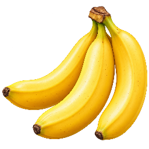
banana · 香蕉256×256 · 70.0 KiB · RGBA 256 KiBassets/images/banana.png制作 #84 · 战斗 assets/images/fortress/zombie-body-banana.png + shared legs + learning badge orange · 橙子618×618 · 9.5 KiB · RGBA 1492 KiB
orange · 橙子618×618 · 9.5 KiB · RGBA 1492 KiBassets/images/orange.png制作 #84 · 战斗 assets/images/fortress/zombie-body-orange.png + shared legs + learning badge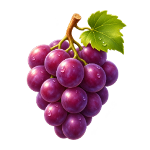
grape · 葡萄618×618 · 14.7 KiB · RGBA 1492 KiBassets/images/grape.png制作 #84 · 战斗 assets/images/fortress/zombie-body-grape.png + shared legs + learning badge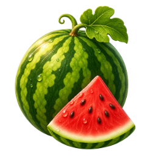
watermelon · 西瓜618×618 · 10.4 KiB · RGBA 1492 KiBassets/images/watermelon.png制作 #84 · 战斗 assets/images/fortress/zombie-body-watermelon.png + shared legs + learning badge pear · 梨256×256 · 71.1 KiB · RGBA 256 KiB
pear · 梨256×256 · 71.1 KiB · RGBA 256 KiBassets/images/pear.png制作 #84 · 战斗 assets/images/fortress/zombie-body-pear.png + shared legs + learning badge strawberry · 草莓618×618 · 11.8 KiB · RGBA 1492 KiB
strawberry · 草莓618×618 · 11.8 KiB · RGBA 1492 KiBassets/images/strawberry.png制作 #84 · 战斗 assets/images/fortress/zombie-body-strawberry.png + shared legs + learning badge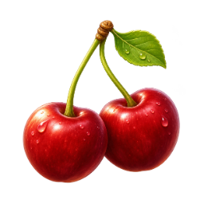
cherry · 樱桃618×618 · 11.4 KiB · RGBA 1492 KiBassets/images/cherry.png制作 #84 · 战斗 assets/images/fortress/zombie-body-cherry.png + shared legs + learning badge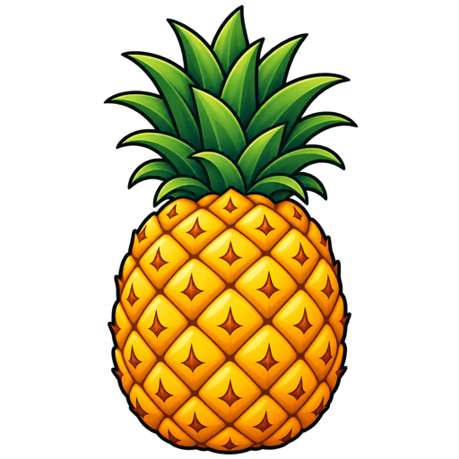
pineapple · 菠萝512×512 · 232.5 KiB · RGBA 1024 KiBassets/images/pineapple.png制作 #84 · 战斗 assets/images/fortress/zombie-body-pineapple.png + shared legs + learning badge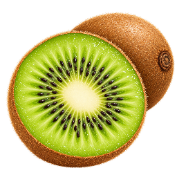
kiwi · 猕猴桃256×256 · 124.7 KiB · RGBA 256 KiBassets/images/kiwi.png制作 #84 · 战斗 assets/images/fortress/zombie-body-kiwi.png + shared legs + learning badge peach · 桃子618×618 · 12.7 KiB · RGBA 1492 KiB
peach · 桃子618×618 · 12.7 KiB · RGBA 1492 KiBassets/images/peach.png制作 #84 · 战斗 assets/images/fortress/zombie-body-peach.png + shared legs + learning badge bear · 熊192×192 · 8.2 KiB · RGBA 144 KiB
bear · 熊192×192 · 8.2 KiB · RGBA 144 KiBlearning-assets/images/bear.png制作 #85 · 战斗 fortress/canvas-scene.ts::drawAnimal(bear) bee · 蜜蜂192×192 · 5.9 KiB · RGBA 144 KiB
bee · 蜜蜂192×192 · 5.9 KiB · RGBA 144 KiBlearning-assets/images/bee.png制作 #85 · 战斗 fortress/canvas-scene.ts::drawAnimal(bee) bird · 鸟192×192 · 4.9 KiB · RGBA 144 KiB
bird · 鸟192×192 · 4.9 KiB · RGBA 144 KiBlearning-assets/images/bird.png制作 #85 · 战斗 fortress/canvas-scene.ts::drawAnimal(bird) cat · 猫192×192 · 6.4 KiB · RGBA 144 KiB
cat · 猫192×192 · 6.4 KiB · RGBA 144 KiBlearning-assets/images/cat.png制作 #85 · 战斗 fortress/canvas-scene.ts::drawAnimal(cat)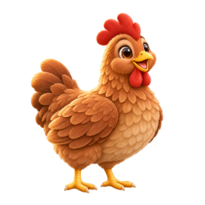
chicken · 鸡192×192 · 5.8 KiB · RGBA 144 KiBlearning-assets/images/chicken.png制作 #85 · 战斗 fortress/canvas-scene.ts::drawAnimal(chicken) cow · 牛192×192 · 6.3 KiB · RGBA 144 KiB
cow · 牛192×192 · 6.3 KiB · RGBA 144 KiBlearning-assets/images/cow.png制作 #85 · 战斗 fortress/canvas-scene.ts::drawAnimal(cow)learning-assets/images/dog.png制作 #85 · 战斗 fortress/canvas-scene.ts::drawAnimal(dog) duck · 鸭192×192 · 5.7 KiB · RGBA 144 KiB
duck · 鸭192×192 · 5.7 KiB · RGBA 144 KiBlearning-assets/images/duck.png制作 #85 · 战斗 fortress/canvas-scene.ts::drawAnimal(duck) elephant · 大象192×192 · 6.5 KiB · RGBA 144 KiB
elephant · 大象192×192 · 6.5 KiB · RGBA 144 KiBlearning-assets/images/elephant.png制作 #85 · 战斗 fortress/canvas-scene.ts::drawAnimal(elephant) fish · 鱼192×192 · 4.9 KiB · RGBA 144 KiB
fish · 鱼192×192 · 4.9 KiB · RGBA 144 KiBlearning-assets/images/fish.png制作 #85 · 战斗 fortress/canvas-scene.ts::drawAnimal(fish)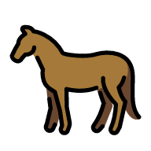
horse · 马192×192 · 7.6 KiB · RGBA 144 KiBlearning-assets/images/horse.png制作 #85 · 战斗 fortress/canvas-scene.ts::drawAnimal(horse)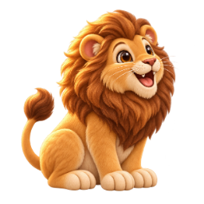
lion · 狮子192×192 · 10.3 KiB · RGBA 144 KiBlearning-assets/images/lion.png制作 #85 · 战斗 fortress/canvas-scene.ts::drawAnimal(lion)learning-assets/images/panda.png制作 #85 · 战斗 fortress/canvas-scene.ts::drawAnimal(panda)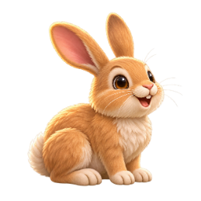
rabbit · 兔子192×192 · 6.1 KiB · RGBA 144 KiBlearning-assets/images/rabbit.png制作 #85 · 战斗 fortress/canvas-scene.ts::drawAnimal(rabbit) sheep · 羊192×192 · 6.2 KiB · RGBA 144 KiB
sheep · 羊192×192 · 6.2 KiB · RGBA 144 KiBlearning-assets/images/sheep.png制作 #85 · 战斗 fortress/canvas-scene.ts::drawAnimal(sheep)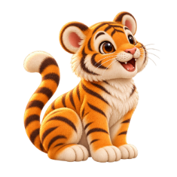
tiger · 老虎192×192 · 7.7 KiB · RGBA 144 KiBlearning-assets/images/tiger.png制作 #85 · 战斗 fortress/canvas-scene.ts::drawAnimal(tiger)